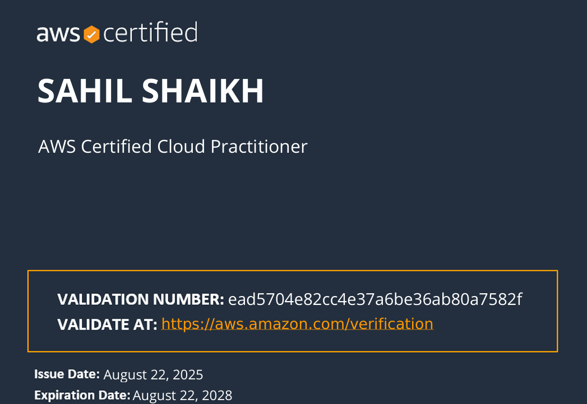
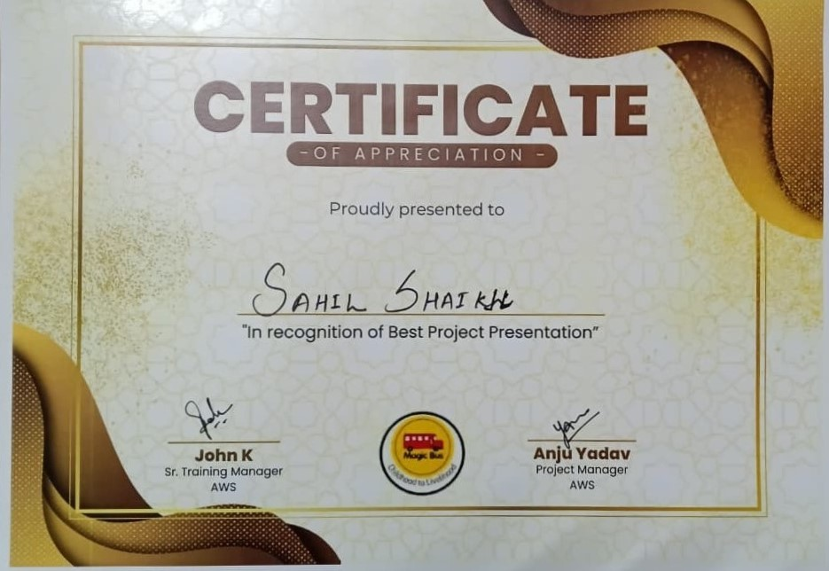

My Certifications

AWS Cloud Practitioner
Earned AWS Certified Cloud Practitioner with strong knowledge of AWS services.
View Certificate

Best Project Winner Certification
Awarded Best Project Presentation for innovation and impactful delivery.
View Certificate
Devops with AWS
Completed Infosys course on Implementing DevOps with AWS, gaining hands-on experience in CI/CD, automation, and cloud deployment..
View Certificate